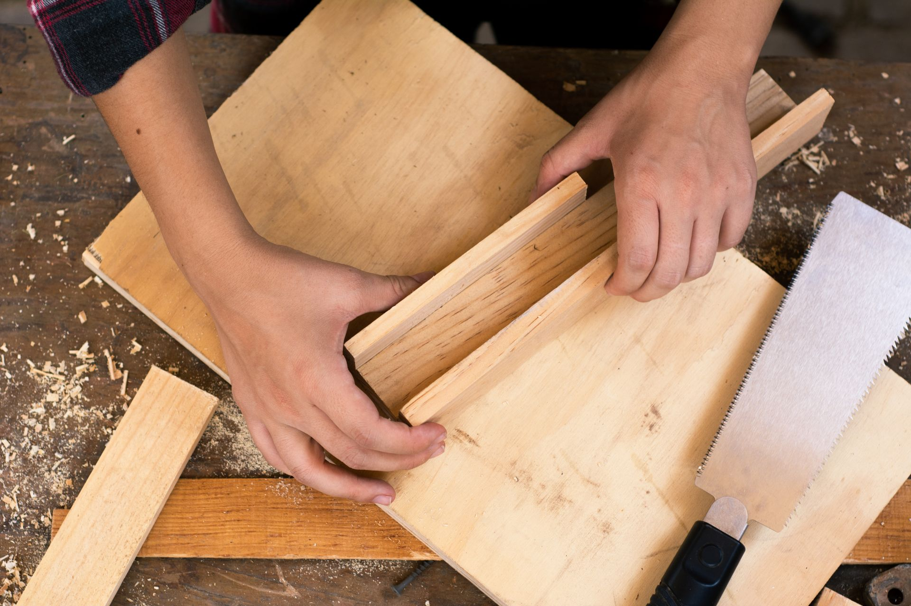

Decks & stairs
Replace worn boards, rebuild steps, and repair railings so outdoor spaces are ready to use again.
Outer Banks carpentry
Thoughtful repairs and finish carpentry for homes that take the full force of the coast.
Plan your projectDecks & stairs · Exterior repairs · Finish carpentry

Outer Banks, North Carolina
Decks, exterior repairs, and finish carpentry for homes from Southern Shores to Nags Head.
Request an estimate
What we do
Replace worn boards, rebuild steps, and repair railings so outdoor spaces are ready to use again.
Address damaged trim, siding, and soft wood around doors, windows, and porches.
Install interior trim and doors, with clean fits and details that suit the home.

Example project
For a weathered entry, the first step is checking where water collects and which pieces have softened. The scope might include new treads, a sturdier handrail, and trim that sheds water more easily.
Have a similar project in mind? Tell us what you’re seeing and where the home is located.
Explore sample projects
For worn decks and exposed entries, we start with what’s underneath. Sound framing, proper drainage, and careful joints make the visible work last longer.
Start a project
We cover Southern Shores, Kitty Hawk, Kill Devil Hills, and Nags Head.
hello@alderandrail.example
Example email for this fictional business.